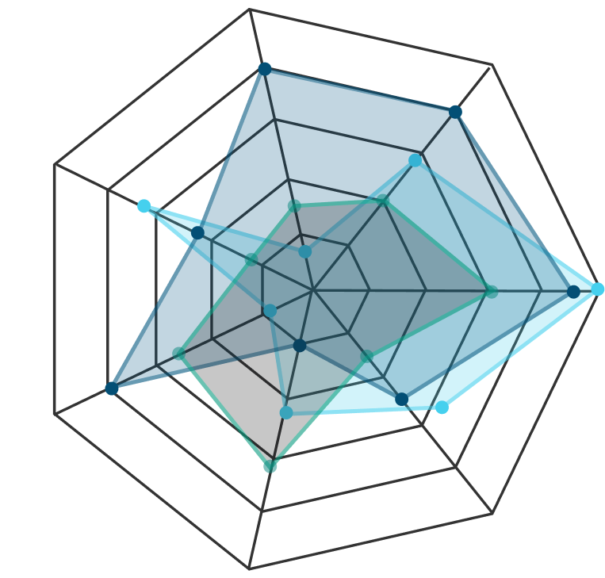

Symetrique helps pharma, biotech, diagnostics, and medical device teams turn fragmented healthcare data into actionable insight across Commercial Analytics, Market Research & Intelligence, and Patient Registry Services.
We combine AI-enabled analytics, real-world data, contextual interpretation, and patient-centered evidence models to solve practical business, market, and evidence questions. Our work is designed for teams that need clearer answers — not just more data, dashboards, or disconnected tools.
Symetrique brings together healthcare data, AI-enabled analysis, and practical business context to help organizations make better decisions across commercialization, market understanding, and longitudinal evidence generation.
Turn fragmented internal and external data into decision-ready insight for market access, patient services, reimbursement, provider strategy, and brand performance.
Build stronger market sizing, segmentation, and forecasting using real-world data, global epidemiology, standards-of-care research, and targeted contextual validation.
Design patient-centered, pharma-funded registries that create durable primary data assets for longitudinal evidence, PRO collection, analysis, publication, and cohort reactivation.
Most firms approach healthcare analytics from a single angle — software, outsourced reporting, survey-based research, or data acquisition. Symetrique takes a more integrated approach.
We combine real-world data fluency, contextual interpretation, AI-enabled analysis, and hands-on execution to help healthcare teams answer high-value questions with more clarity and less noise.
We are not trying to be another generic platform or another broad consulting layer. Our goal is to work closely on meaningful questions, use the right data in the right context, and generate outputs that support real commercial, market, and evidence decisions.

We begin with a clear business or evidence problem. From there, we identify what internal data already exists, where external datasets add meaningful value, and what contextual interpretation is required to make the output realistic and useful.
Our approach is deliberately practical:
The goal is not another reporting layer. It is insight that helps teams act with more confidence.
Symetrique’s thought leadership reflects the ideas behind our services: commercial analytics that go beyond reporting, market intelligence built on a stronger real-world-data foundation, and patient-centered registry models that create more useful longitudinal evidence over time.
We write about the problems healthcare teams still face — fragmented data, weak market assumptions, disconnected workflows, and information asymmetry — and the practical ways data, context, and analytics can improve decision-making.
Why healthcare commercial teams need contextual, decision-oriented insight — not just one more dashboard.
How real-world data, global disease intelligence, and targeted research can produce better market sizing and forecasting.
Why registries should do more than support studies — and how they can reduce information asymmetry and create durable data assets.
Claims, EHR, registries, formulary data, public health data, epidemiology sources, internal operating data, publications, and primary research each reveal part of the market. But no single source explains the whole picture. Symetrique connects these fragmented inputs through disease-state understanding, care-pathway logic, standards of care, protocol interpretation, and selective expert or primary research. That is how data becomes realistic, defensible, and decision-oriented.
Schedule a 20-minute discovery call to learn how Symetrique can accelerate your market access and evidence generation capabilities.
No commitment required | 20 min conversation